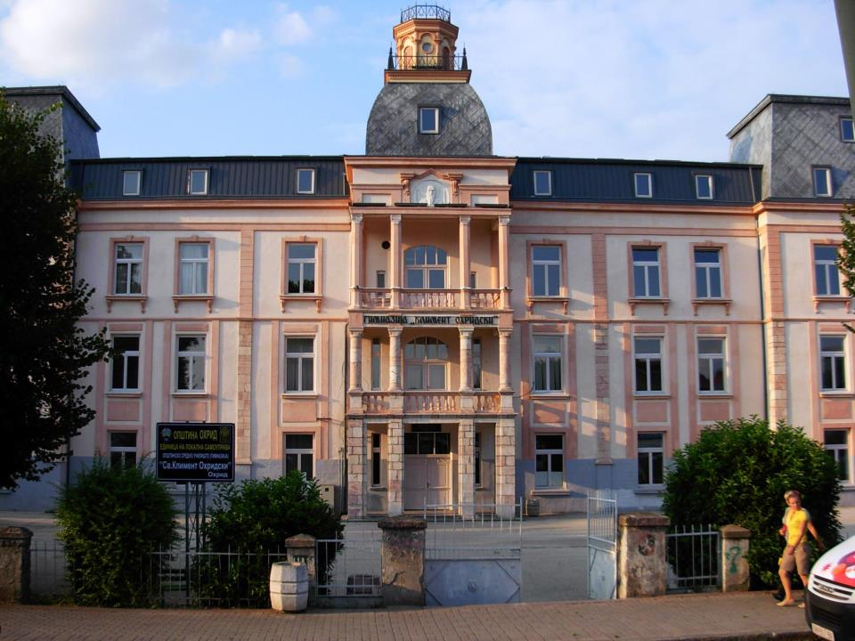
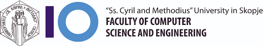

I studied high school at St. Kliment Ohridski Gymnasium in Ohrid. I was provided me with a strong foundation in mathematics,
sciences, languages, social sciences, and humanities. The curriculum was designed to challenge and inspire students,
promoting critical thinking, problem-solving skills, and a thirst for knowledge.
I am grateful for the knowledge, guidance, and support I received during my time at St. Kliment Ohridski Gymnasium. The education I gained from this institution has laid a solid foundation for my academic and professional journey, equipping me with the necessary skills, discipline, and passion to pursue further studies in computer science and programming.


Currently, I am pursuing my studies at the Faculty of Computer Science and Engineering, a prestigious institution dedicated to nurturing future innovators and professionals in the field of technology, It is a privilege to be a part of this esteemed faculty, where I am constantly challenged and inspired to explore the vast realm of computer science and engineering. At the faculty, I am immersed in a comprehensive curriculum that covers a wide range of subjects related to computer science and engineering. From foundational courses in programming languages, algorithms, and data structures to advanced topics such as artificial intelligence, database management, and software engineering, I am gaining a deep understanding of the fundamental principles and cutting-edge technologies that drive the digital world.